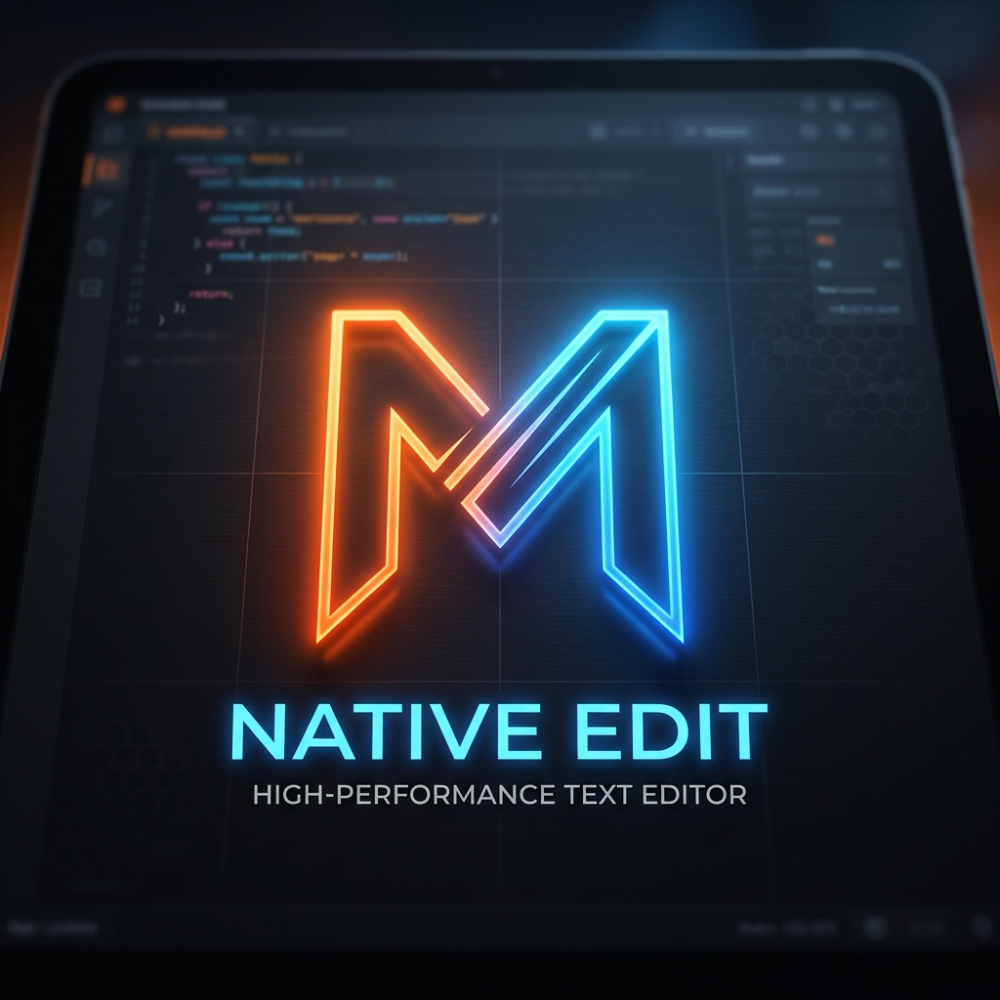

Markpad NativeA zero-bloat, native Windows utility designed to open, parse, and edit any text format instantly. Ditch heavy Electron editors for pure Rust performance.
Compiles natively to machine code. Starts up in less than 0.2 seconds—faster than standard Windows Notepad.
No extensions needed. Automatically converts logs into color-coded timelines, CSVs into clean data grids, and Markdown into pristine HTML.
Tied directly into the Windows Registry. Double-click any text format on your desktop, and it streams instantly into the editor.